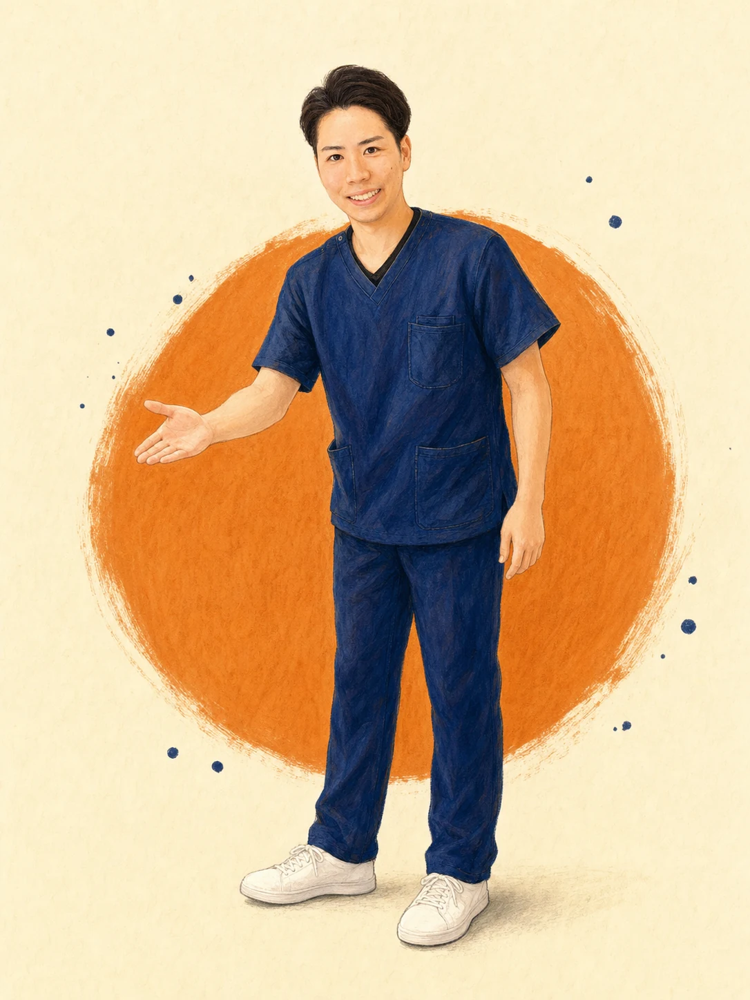
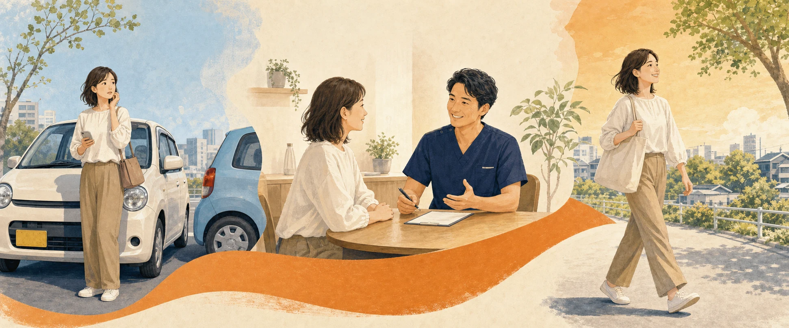
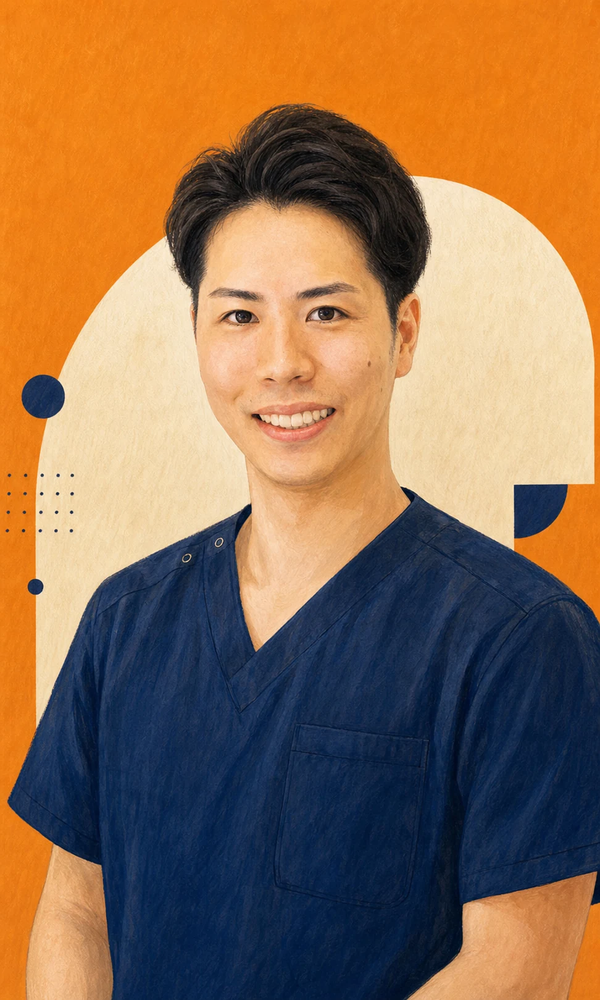
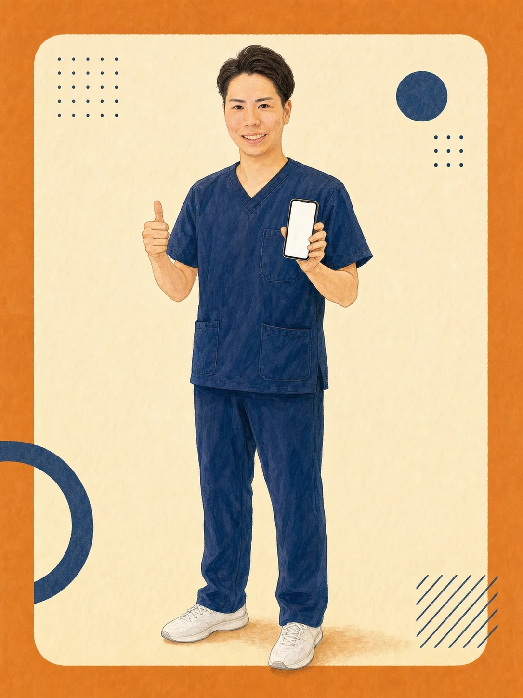

01
安全を確保する
安全な場所へ移動し、警察へ連絡。相手の情報や現場の写真も残しておきます。
落ち着いて、ひとつずつ
01 ACCIDENT CARE DESK / NAGOYA MINATO
体のつらさも、保険のことも、通い方も。
いま必要なことを、一緒にひとつずつ整理します。

SCROLL TO START事故に遭ったばかりの方へ
事故直後は、誰でも頭が真っ白になります。全部を一度に考えなくて大丈夫。順番どおりに進めましょう。
安全な場所へ移動し、警察へ連絡。相手の情報や現場の写真も残しておきます。
落ち着いて、ひとつずつ事故直後は平気でも、数日後から首や腰につらさが出ることがあります。
違和感も見逃さないで何から始めるか、保険会社へどう伝えるかまで、無料で一緒に整理します。
LINEで状況を送る →DOES THIS SOUND FAMILIAR?
よくある不安を3つの箱に分けました。あなたが気になる箱を開いてみてください。
首や腰が痛い、数日後からつらくなった、病院では湿布だけで不安。状態を確認し、無理のない施術をご提案します。
症状から探す →自賠責保険、保険会社とのやり取り、病院との併用や転院。分かりにくい手続きも一緒に整理します。
サポートを見る →施術費用は原則0円。通院慰謝料の目安は、ページ内のシミュレーターで今すぐ確認できます。
金額の目安を計算 →相談から日常へ戻るまで
行ったり来たりしないよう、受付から施術、通院中の手続きまで同じチームが伴走します。

LINE・お電話で事故状況をお知らせください。
事故の状況とお体の状態を丁寧に伺います。
状態を確認し、施術方針を分かりやすく共有。
国家資格者がやさしく丁寧に施術します。
保険会社への連絡や通院の不安も支えます。
WHY BRIGHT?
被害者の方の施術費用は原則0円。費用を心配せず必要な施術に専念できます。
交通事故によるケガの方は、お仕事帰りにも通いやすい時間まで受付。
国家資格を持つ柔道整復師が、お一人おひとり丁寧に対応します。
店舗前に駐車場を用意。お車での来院もスムーズです。
現在通っている病院・接骨院からの転院や、病院との併用通院もご相談ください。
費用と慰謝料について
自賠責保険が適用されるため、窓口でのお支払いは原則ありません。
4,300円 × 2 × 実通院日数（通院期間の日数を上限とする条件があります）
2つの数字を動かすだけで、自賠責基準の目安を確認できます。
※ 本シミュレーターは自賠責基準（1日4,300円）に基づく概算の目安です。実際の金額は「実通院日数×2」と「通院期間の日数」の少ない方に4,300円を掛けて算出され、症状や状況により異なります。任意保険基準・弁護士基準では金額が変わる場合があります。正確な金額は当院までお気軽にご相談ください。
実際の院内をご覧ください
明るく清潔な院内で、キッズスペースも完備。写真はすべて実際の有輝接骨院です。
院内写真をもっと見る →


 REAL PHOTO / ITO YUKI
REAL PHOTO / ITO YUKI
あなたの伴走者
柔道整復師 / スポーツトレーナー
施術歴10年。1歳の娘のパパとして、お子様連れの方も大歓迎です。どんな小さな症状でも、保険や通院の不安でも、気兼ねなくご相談ください。

FIND YOUR ANSWER
症状からでも、事故の形からでも。あなたに近いページへ進んでください。
FAQ
はい。交通事故によるケガの施術は自賠責保険が適用されるため、被害者の方の窓口負担は原則0円です。健康保険を使う場合と異なり、慰謝料の対象にもなります。詳しくはお気軽にご相談ください。
できます。現在通院中の病院や接骨院から有輝接骨院／Bright整体へ転院することも、病院と当院を併用して通うことも可能です。手続きのサポートもいたしますのでご安心ください。
事故直後は痛みが出にくく、数日後に症状が現れることもあります。早めに病院で状態を確認したうえで、当院にもご相談ください。
症状によって異なりますが、初期は週3〜4回など、できるだけ間隔を空けずに通っていただくと回復がスムーズです。お一人おひとりの状態に合わせて通院ペースをご提案します。
自賠責保険では、通院日数などに応じて慰謝料が支払われます。きちんと通院し記録を残すことが大切です。当院では適切な通院をサポートいたします。
完全予約制です。LINEまたはお電話（052-655-5610）でご予約いただくとスムーズです。交通事故によるケガの方は夜20時まで受付しております。
アクセス・院情報
| 院名 | 有輝接骨院／Bright整体 |
|---|---|
| 住所 | 〒455-0054 愛知県名古屋市港区遠若町1丁目7-7 ハイツメイヨン1F |
| 電話 | 052-655-5610 |
| アクセス | 国道41号線から県道451号線へ入りすぐ左 |
| 駐車場 | 店舗前に2台あり |
| 受付時間 | 平日 9:00〜20:00（最終予約19:30） 土 9:00〜17:00（最終受付） 交通事故のご相談は受付時間内いつでも |
| 定休日 | 火曜・日曜・祝日 |
ONE MESSAGE IS ENOUGH.
状況の整理から一緒に始めます。LINE・お電話で無料相談を受け付けています。
